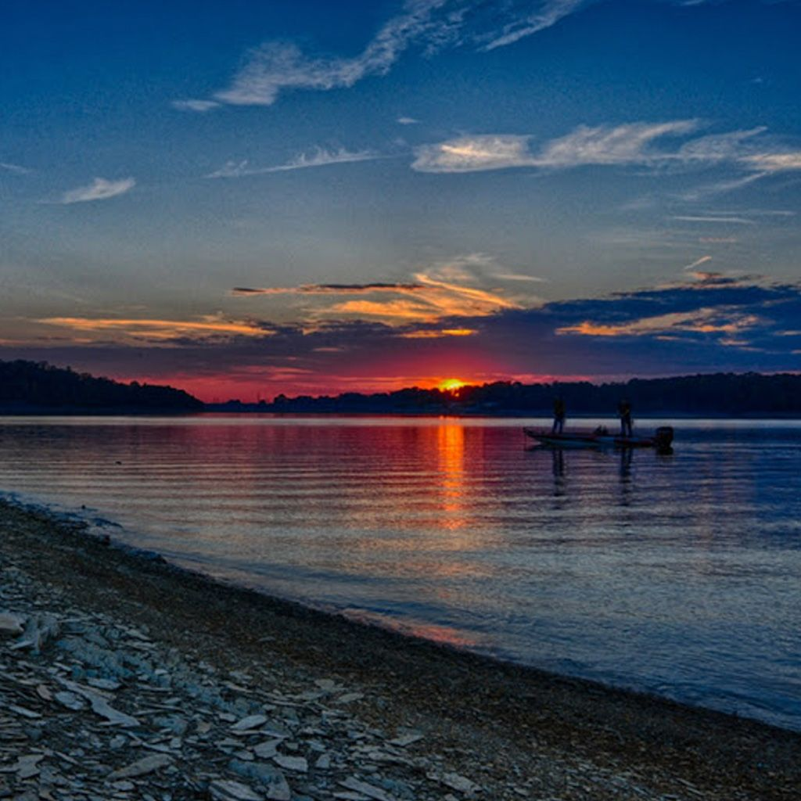

Douglas Lake
Douglas Lake, nestled near the Smoky Mountains, is a peaceful haven for nature lovers and outdoor enthusiasts. This picturesque lake offers a tranquil escape with activities like boating, fishing, and swimming, surrounded by stunning mountain vistas. It's the perfect spot for those seeking a quiet retreat or an active day in the great outdoors. Douglas Lake is not just a destination; it's an experience that embodies the serene beauty and recreational joy of the Tennessee outdoors.
Visit Douglas Lake